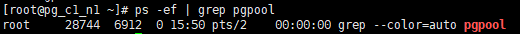
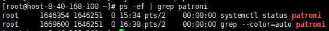
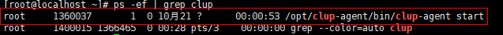
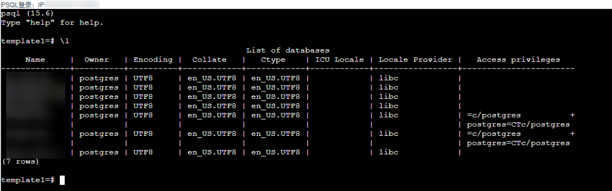
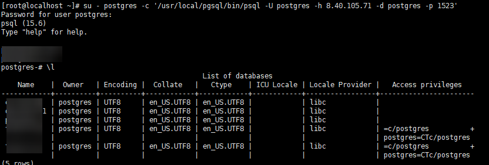
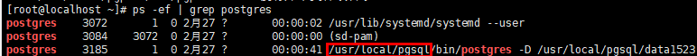
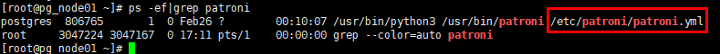
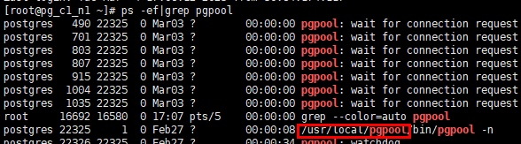

前提条件
- 注册PostgreSQL集群实例前，请确保集群中每个主机已进行注册。

要求集群中所有主机已注册相同名称的数据库。
具体操作请参见步骤3：注册PostgreSQL单实例下的数据库。
- 执行实例注册前，请检查数据库安装路径下bin/lib/share文件属主是否为root，若是root请在/opt/DataBackup/ProtectClient/Plugins/GeneralDBPlugin/bin/applications/postgresql/conf/switch.conf配置文件中将enable_root配置项取值设置为1。
- 注册数据库账户前，请先确保账户具有以下所需的最小权限。配置方法如下，以账户teste_bkp为例说明：
- 登录权限：由于注册PostgreSQL集群实例下的数据库、执行备份以及恢复过程都需要通过数据库账号登录到指定数据库，需执行CREATE ROLE teste_bkp LOGIN PASSWORD 'teste_bkp';，使账户必须具有最基本的登录权限，并通过以下方式登录数据库，然后可查看数据库版本号，其中/usr/local/pgsql/bin/psql代表psql脚本的路径，-h参数代表数据库实例所在主机IP，-p参数代表数据库实例的端口号。
su - postgres su - postgres -c '/usr/local/pgsql/bin/psql -h 数据库IP -p 端口号 -U teste_bkp -d postgres'
- 读取配置文件权限：登录数据库后，通过GRANT pg_read_all_settings TO teste_bkp;设置权限。
- 函数执行权限：需要具备pg_backup_start函数执行权限和pg_backup_stop函数执行权限才可以执行备份，故需要赋予函数执行权限：
通过1查询到的版本号，如果版本号为15.0及以上，通过以下命令赋予权限：
1）赋予pg_backup_start函数权限：GRANT EXECUTE ON FUNCTION pg_backup_start TO teste_bkp;
2）赋予pg_backup_stop函数权限：GRANT EXECUTE ON FUNCTION pg_backup_stop TO teste_bkp;
如果版本号为15.0以下9.6及以上，通过以下命令赋予权限：
1）赋予pg_backup_start函数权限：GRANT EXECUTE ON FUNCTION pg_start_backup(text,boolean,boolean) TO teste_bkp;
2）赋予pg_backup_stop函数权限：GRANT EXECUTE ON FUNCTION pg_stop_backup() TO teste_bkp;
如果版本号为9.6以下，通过以下命令赋予权限：
1）赋予pg_backup_start函数权限：GRANT EXECUTE ON FUNCTION pg_start_backup(text,boolean) TO teste_bkp;
2）赋予pg_backup_stop函数权限：GRANT EXECUTE ON FUNCTION pg_stop_backup() TO teste_bkp;
- 登录权限：由于注册PostgreSQL集群实例下的数据库、执行备份以及恢复过程都需要通过数据库账号登录到指定数据库，需执行CREATE ROLE teste_bkp LOGIN PASSWORD 'teste_bkp';，使账户必须具有最基本的登录权限，并通过以下方式登录数据库，然后可查看数据库版本号，其中/usr/local/pgsql/bin/psql代表psql脚本的路径，-h参数代表数据库实例所在主机IP，-p参数代表数据库实例的端口号。
- 赋予数据库流复制用户登录权限和流复制权限：以账户teste_bkp_repl为例说明，登录数据库，数据库流复制用户在执行恢复过程中，备节点需要通过数据库流复制用户从主节点同步数据，需要赋予数据库流复制用户登录和流复制的权限，需执行CREATE ROLE teste_bkp_repl LOGIN REPLICATION PASSWORD 'teste_bkp_repl';。
- 注册PostgreSQL集群前，请先查询集群类型。
Pgpool集群
- 使用PuTTY，登录PostgreSQL数据库主机。
- 执行ps -ef | grep pgpool命令，查询是否是Pgpool集群。如果回显进程包含pgpool相关字段，则说明当前集群为Pgpool集群，反之，则不是Pgpool集群。
- 例如，当回显如下时，则说明当前集群为Pgpool集群。

- 例如，当只有如下回显时，则说明当前集群不为Pgpool集群。

Patroni集群
- 使用PuTTY，登录PostgreSQL数据库主机。
- 执行ps -ef | grep patroni命令，查询是否是Patroni集群。如果回显进程包含patroni相关字段，则说明当前集群为Patroni集群，反之，则不是Patroni集群。
- 例如，当回显如下时，则说明当前集群为Patroni集群。

- 例如，当只有如下回显时，则说明当前集群不为Patroni集群。

CLup集群
- 使用PuTTY，登录PostgreSQL数据库主机。
- 执行ps -ef | grep clup命令，查询是否是CLup集群。如果回显进程包含clup相关字段，则说明当前集群为CLup集群，反之，则不是CLup集群。
- 例如，当回显如下时，则说明当前集群为CLup集群。

- 例如，当只有如下回显时，则说明当前集群不为CLup集群。

- 例如，当回显如下时，则说明当前集群为CLup集群。
当CLup管理界面无法正常打开（如：CLup Server节点所在主机宕机、CLup Server节点所在主机防火墙未关闭等均会导致无法进入CLup管理界面）或CLup管理界面上集群状态为离线时，将导致已在本产品注册的相应CLup集群实例为离线状态，若要恢复在线状态以执行备份等任务，只需在CLup管理界面上将集群状态设置为上线，随后，OP界面中数据库实例的状态将自动更新为在线。
- CLup部署形态的PostgreSQL集群进入数据库实例的方法如下：
方式一：
- 登录CLup数据库管理页面，通过选择“数据库管理 > 实例列表”进入数据库实例列表界面。
登录CLup数据库管理页面的方法：
- 登录链接：http://IP:8090（IP: 单网卡主机为当前主机的IP，多网卡主机则是安装过程中所选择的IP地址）；
- 登录用户名：admin（默认为admin，如果不正确，需向数据库管理员获取）；
- 登录密码：cstech（默认为cstech，如果不正确，需向数据库管理员获取）。
- 选择相应的实例，单击“更多>psql”，即可进入数据库实例，登录后界面如下：

方式二：
- 使用PuTTY，登录CLup Agent主机。
- 执行以下命令，登录数据库管理员界面。其中，/usr/local/pgsql/bin/psql代表psql脚本的路径，-h参数代表数据库实例所在主机IP，-p参数代表数据库实例的端口号，-h和-p参数可以通过方式一登录后获取相关的“所在主机”和“端口”。
su - postgres -c '/usr/local/pgsql/bin/psql -U postgres -h IP -d postgres -p 端口号'
登录成功后界面如下所示：

- 登录CLup数据库管理页面，通过选择“数据库管理 > 实例列表”进入数据库实例列表界面。
操作步骤
- 创建集群。
- 在PostgreSQL页面选择“集群”页签。
- 单击“注册”。
- 配置集群及其认证信息。
相关参数说明如表1所示。
表1 PostgreSQL集群注册信息 参数
说明
名称
自定义集群名称。
类型
选择“主备复制”。
虚拟IP地址
虚拟IP地址，需要和PostgreSQL实例所在的主机同网段且未被使用。
说明：- Pgpool集群的虚拟IP地址获取方式：使用PuTTY，登录PostgreSQL数据库主机，通过查看pgpool.conf文件中的delegate_IP字段获取，例如，通过命令cat /usr/local/pgpool/etc/pgpool.conf | grep delegate_IP获取；
- Patroni集群的虚拟IP地址获取方式：使用PuTTY，登录PostgreSQL数据库主机，查看Patroni配置文件中的回调脚本名称，再通过查看回调脚本中的VIP字段来获取虚拟IP地址，例如，可以通过cat /etc/patroni/patroni_callback.sh | grep VIP获取回调脚本patroni_callback.sh中的VIP字段；
- CLup集群的虚拟IP地址获取方式：登录CLup数据库管理页面，选择“HA集群 > HA管理”获取对应的VIP字段：
节点/集群节点
选择部署PostgreSQL集群实例所需要的主机。当集群类型为CLup时，选择的该节点代表CLup Agent所在的节点。
集群类型
集群类型可选择Pgpool、Patroni、CLup。
CLup Server节点
当集群类型为CLup时，需要配置该参数。该参数表示CLup集群的管理节点。
- Pgpool集群的虚拟IP地址获取方式：使用PuTTY，登录PostgreSQL数据库主机，通过查看pgpool.conf文件中的delegate_IP字段获取，例如，通过命令cat /usr/local/pgpool/etc/pgpool.conf | grep delegate_IP获取；
- 单击“确定”。
- 注册集群实例下的数据库。
- 在PostgreSQL页面选择“实例”页签。
- 单击“注册”。
- “类型”选择“集群实例”。
- 配置数据库实例及其认证信息。
相关参数说明如表2所示。
表2 PostgreSQL集群实例注册信息 参数
说明
名称
自定义安装数据库的用户名称。
集群
选择要注册的数据库所在的集群。
用户名
运行数据库的操作系统用户名，默认为postgres。
Pgpool端口
当集群选择为Patroni集群或CLup集群时不展示该参数。
Pgpool服务侦听TCP/IP连接的端口号，默认为9999。
数据库用户名
数据库的管理员用户名称，需要向数据库管理员获取。
数据库密码
数据库的管理员用户密码，需要向数据库管理员获取。
数据库流复制用户名
数据库用于流复制的用户名称，需要向数据库管理员获取。
数据库流复制用户密码
数据库用于流复制的用户密码，需要向数据库管理员获取。
- 单击“添加”，在弹出的添加对话框中添加集群实例下的所有节点。
相关参数说明如表3所示。
表3 集群实例的节点信息 参数
说明
主机
选择集群下的主机节点。
数据库安装路径
要注册的数据库的安装路径，可以使用PuTTY，登录PostgreSQL数据库主机，通过ps -ef | grep postgres查询，如下图所示。

Patroni配置文件完整路径
说明：仅在1.6.0及后续版本展示该参数。
记录Patroni集群账号、密码、etcd等信息的配置文件的路径，即为patroni.yml文件的安装路径，可以使用PuTTY，登录PostgreSQL数据库主机，通过ps -ef | grep patroni查询，如下图所示。

Pgpool安装路径
Pgpool服务的安装路径，可以使用PuTTY，登录PostgreSQL数据库主机，通过ps -ef | grep pgpool查询，如下图所示。

业务IP地址
数据库服务接收TCP/IP连接的主机IP地址，即为注册到本产品上的主机IP地址，需要向数据库管理员获取。
数据库端口
数据库服务侦听TCP/IP连接的端口号，默认为5432。
- 依次选择每个集群成员的已注册的实例名称。
- 单击“确定”。